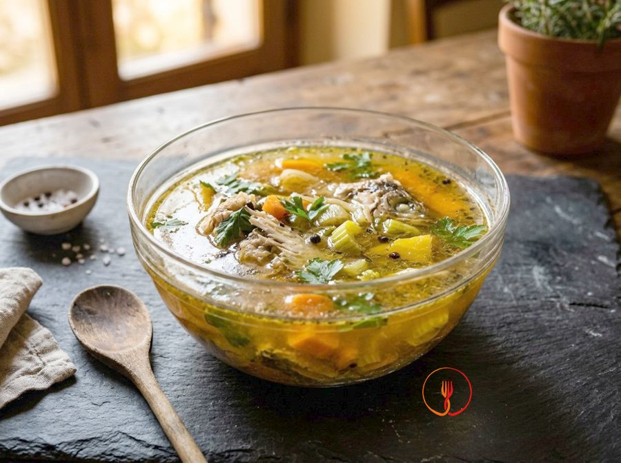

Brodo di pesce
Il fumetto di pesce fatto in casa con lische e teste: la base per risotti alla marinara, zuppe e sughi di mare.
Ingredienti
- Lische e teste di pesce bianco800 g
- Carota1 pz
- Cipolla1 pz
- Sedano1 costa
- Prezzemolo1 mazzetto
- Vino bianco secco100 ml
- Pepe nero in grani5 pz
- Sale grossoq.b.
- Acqua fredda2 l
Allergeni
Pesce, Sedano, Solfiti
Procedimento
- Sciacqua bene lische e teste sotto l'acqua fredda, eliminando le branchie e le tracce di sangue.
- Mettile in una pentola con le verdure a pezzi, il prezzemolo e il pepe, poi sfuma con il vino bianco.
- Copri con l'acqua fredda, porta a bollore ed elimina la schiuma.
- Cuoci a fuoco dolce per 30-40 minuti, non di più, altrimenti il brodo diventa amaro.
- Sala leggermente e filtra con un colino a maglie fitte foderato con una garza.
Consigli dello chef
Usa solo pesce bianco e magro (merluzzo, orata, branzino, gallinella): il pesce grasso rende il brodo pesante.
Togli sempre le branchie, che danno un gusto amaro.
Non superare i 40 minuti di cottura.
Apri la ricetta nell'app per la lista della spesa, le schede ingredienti e i negozi vicini.